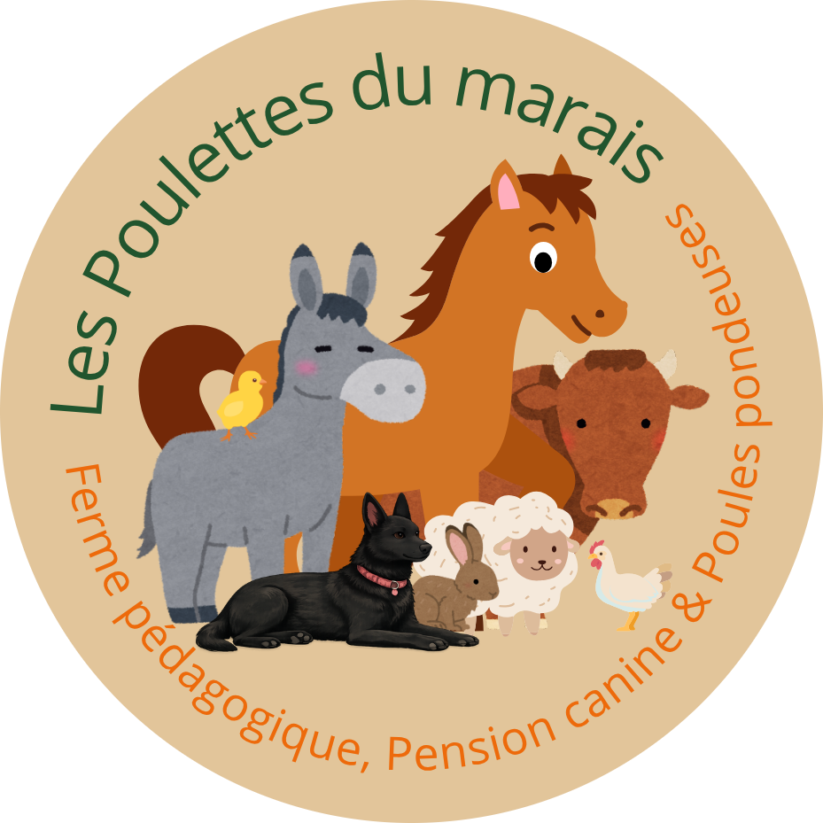

Mode d'emploi client
Réserver une activité à la ferme pédagogique
Un guide simple pour choisir une activité, indiquer les participants et envoyer une demande à la ferme.
1. Vous choisissez l'activitéVisite, atelier ou animation.
2. Vous sélectionnez une dateSelon les créneaux proposés.
3. Vous envoyez la demandeLa ferme confirme ensuite.